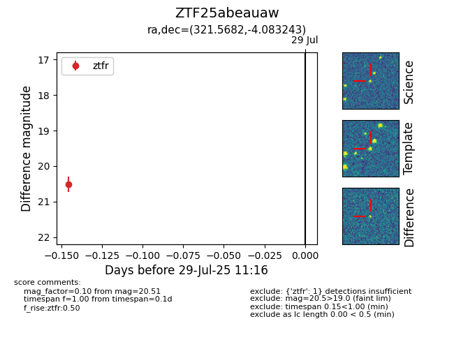

Target ZTF25abeauaw at 2025-07-29 11:16, see:
FINK: fink-portal.org/ZTF25abeauaw
Lasair: lasair-ztf.lsst.ac.uk/objects/ZTF25abeauaw
ALeRCE: alerce.online/object/ZTF25abeauaw
alt names
ZTF25abeauaw (ztf,fink)
coordinates:
equatorial (ra, dec) = (321.5682,-4.08324)
galactic (l, b) = (48.7869,-35.98827)
photometry
last ztfr=20.51
1 ztfr detections
